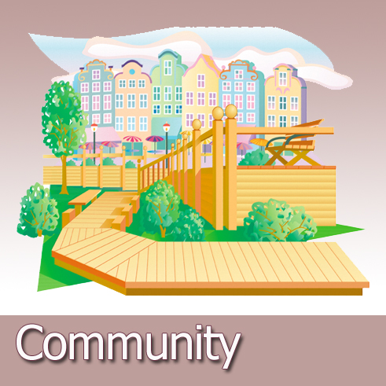

No matter where we live. It is important for us to be more concerned about the quality of our communitys or neigborhoods.We all have to be encouraged to take part in improving our places for the best.
5 reasons we can do to help improve and maintain the quality of our community.
-Help determine on the overall quality of the neighborhood.
-Encourage more people to practice good habits of keeping the neighborhood clean
-For dog owners, influence others to clean up after their own pet at all times
-Attempt to help take part in community service make an effort in cleaning up trash litered around
-Improve the habit of knowing where to dispose empty bottles in their proper places. The more this is influenced, the more better it will be for the environment
Original picture by Susan Bates.Licensed under CC by 2.0
Go to page 3